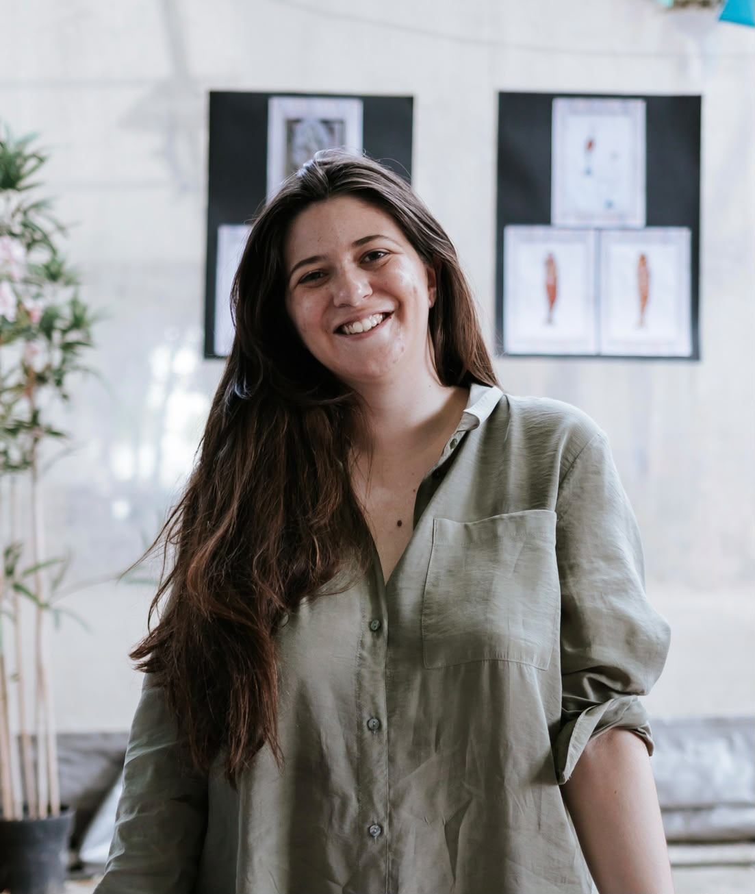
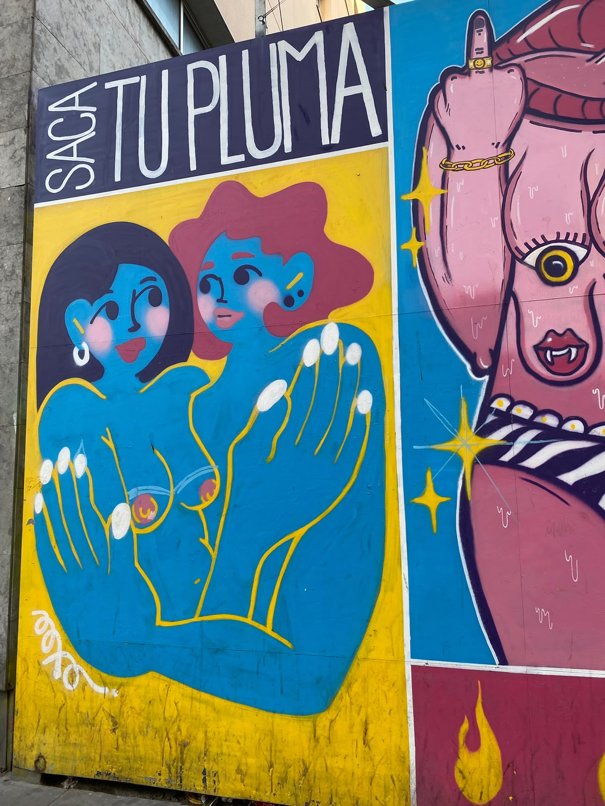
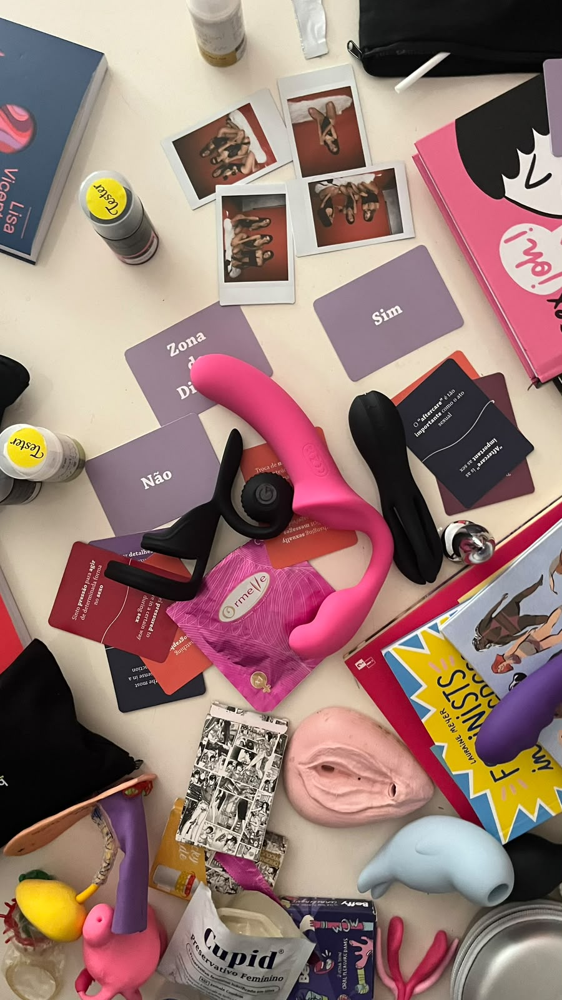
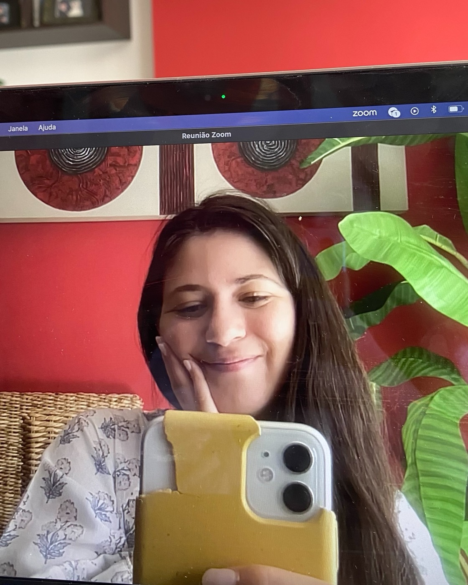
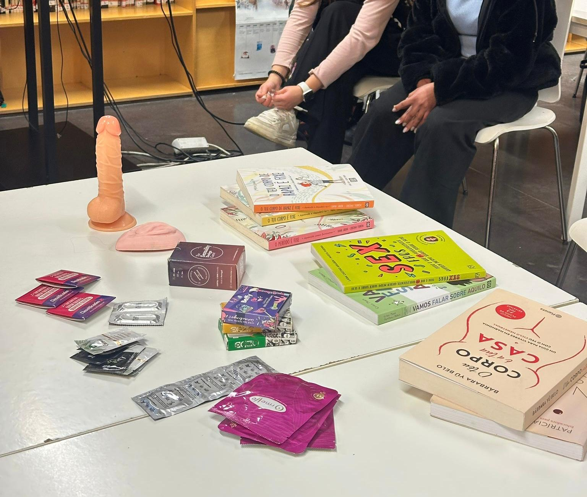
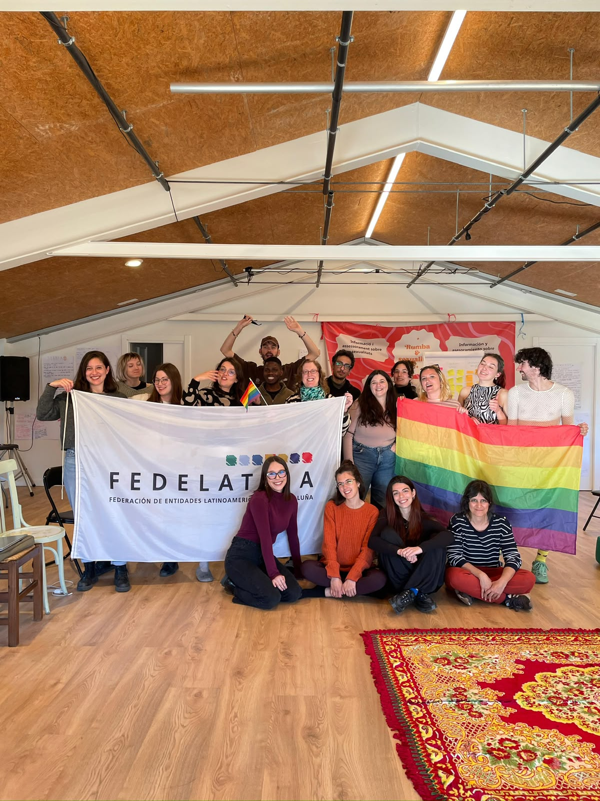
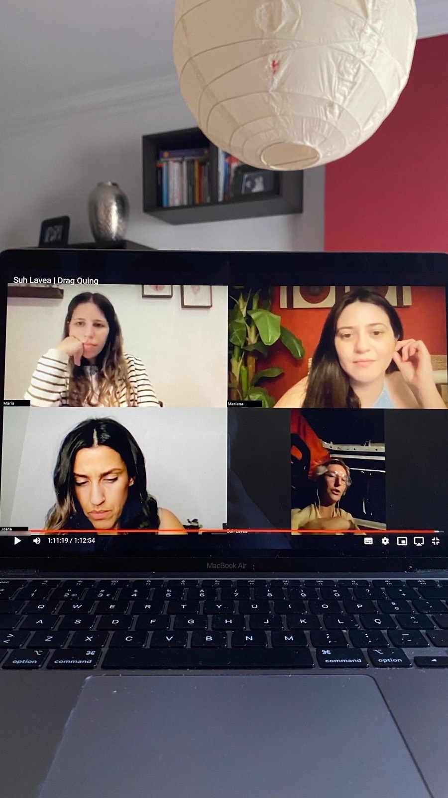
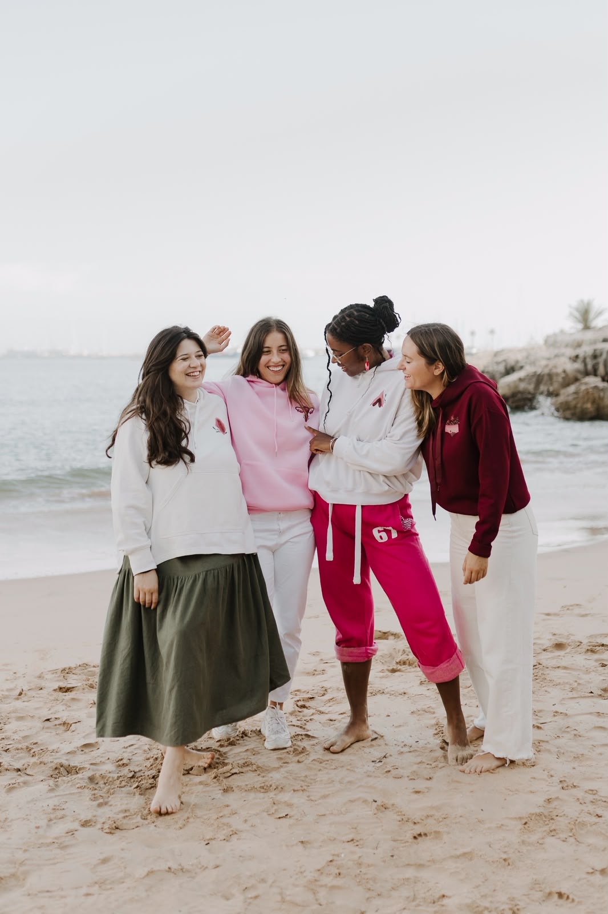
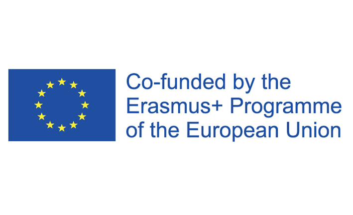

Educadora sexual · Fundadora da Soulful Cycles
Mariana
Fonseca
A transformar tabus em conversas e preconceito em conexão.
Sessões em escolas, aconselhamento online, viagens e festas feministas. Em Lisboa e online.
Como vista em TVI · NiT · Revista Maria · Notícias ao Minuto
Sobre mim
Olá, sou a Mariana!
Sou educadora sexual e fundadora da Soulful Cycles. Com formação em Psicologia Comunitária, crio espaços mais seguros, sem julgamentos e queer-friendly, em escolas, viagens, formações, sessões online e celebrações.
Serviços
Aprender sobre sexualidade, em conjunto
Viagens · Grupos pequenosViagens Eróticas, Feministas e Queer

Conhecer uma cidade através da sexualidade, do feminismo e da sua comunidade queer. Próxima viagem: Dublin, março 2027.
Saber mais →
Eventos · CelebraçõesDespedidas, Aniversários e Outras Celebrações Feministas

Despedidas, aniversários e outras celebrações, com tempo para aprender, conversar e rir. Tudo planeado à tua medida.
Saber mais →
Online · Individual e casaisAconselhamento em Saúde Menstrual e Sexual

Sessões online, a sós ou em casal, sobre ciclo menstrual, fertilidade, contraceção e muito mais. A partir de 40€/sessão.
Saber mais →
Educação · Escolas e faculdadesSessões de Educação Sexual em Escolas e Faculdades

Sessões interativas, do ensino básico à universidade. 40€/hora.
Saber mais →
Formações para profissionaisFormações em Educação Sexual

Para youth workers, profissionais de saúde e de educação, com métodos participativos.
Saber mais →
Online · Ver quando quiseresBiblioteca de Sessões Gravadas

Três anos de sessões sobre sexualidade, feminismo e temas queer, para veres ao teu ritmo. 10€/mês.
Saber mais →
Coleção Soulful CyclesHoodies, T-shirts e Tote Bags

Roupa que começa conversas, feita em peças de segunda mão. Cada uma é única. Deixa o teu email para saberes quando abrem as encomendas.
Saber mais →Impacto
Tabus quebrados até agora
Viagens a Amesterdão · Barcelona · Londres · Porto · Praga
Testemunhos
Nas palavras de quem participou
Foi uma experiência única! Até agora, acredito que a Mariana seja a única na Europa a organizar este tipo de viagens (…) Recomendo para quem quer explorar a sua sexualidade ou, pelo menos, conhecer uma cidade e a sua cultura numa perspectiva mais erótica.
A melhor opção que eu fiz para conhecer melhor o ciclo menstrual! Sem dúvida alguma uma ótima profissional!
Foi uma sessão super esclarecedora, tanto para mim como para o meu namorado. Todas as dúvidas que tínhamos foram esclarecidas e fiquei a conhecer-me melhor a mim e ao meu corpo enquanto mulher <3
Excelente e educativa. Gostaria que acontecessem mais palestras como esta.
Planeamento incrível da despedida de solteira, com fluidez entre os vários momentos organizados, tornando um dia incrivelmente divertido e leve!
Eu e as minhas amigas tivemos uma tarde incrível com a Mariana, da Soulful Cycles, no meu aniversário. A Mariana preparou uma visita à Pensão Amor seguida de uma sessão exclusiva para nós: um espaço sem julgamentos onde falar de prazer e sexualidade se torna um tema super natural e descontraído. Saí de lá a aprender imenso e muito mais consciente da importância da missão da Mariana.
Criaram um espaço seguro para nos expressarmos. (…) Gostei muito da energia da equipa de formação e as atividades planeadas foram bem pensadas e diversificadas. Tiveram tempo para ouvir e validar a opinião de todas as pessoas, sem julgamentos.
Conheço a Mariana há cerca de 7 anos e nestes últimos anos tenho tido o prazer de trabalhar em alguns projetos em parceria com ela e só tenho o melhor a dizer. A Mariana é uma pessoa muito querida, consciente, empática e que procura estar sempre melhor informada e educada para poder melhor apoiar a sua comunidade. É muito competente no que faz, tem um sentido crítico bem apurado e traz sempre contributos muito positivos para os projetos em que participa. (…) Acima de tudo a Mariana é uma pessoa muito amável e divertida que faz com que todos se sintam realmente seguros na sua presença, algo que nos dias que correm é fundamental!
Porquê trabalhar comigo
O que trago
Métodos interativos
Aprende-se a participar, não só a ouvir.
Um espaço mais seguro
Sem julgamentos, inclusivo e queer-friendly.
Formação em psicologia
Mestrado em Psicologia Comunitária.
Adaptado ao teu grupo
De crianças a youth workers.
Experiência internacional
17 projetos em 13 países.
Português ou inglês, como preferires
Sessões e workshops disponíveis nas duas línguas.
Perguntas frequentes
Antes de me escreveres
As sessões de aconselhamento são confidenciais?
Sim. O que partilhas fica entre nós. As sessões são privadas e sem julgamentos, por isso podes perguntar tudo.
Como funcionam as sessões online?
São feitas por videochamada, a partir de casa ou de onde te sentires à vontade. Combinamos o dia e a hora por mensagem ou email.
Com que idades trabalhas nas escolas?
Adapto cada sessão à idade e ao que a turma precisa, do ensino básico à universidade. Antes da sessão, falo com quem me convida para preparar tudo à medida.
Posso ir numa viagem sozinha?
Sim! A maioria das pessoas vai sozinha. Os grupos são pequenos, por isso é fácil conhecer as outras pessoas desde o primeiro dia.
Quanto custa uma celebração?
Depende do que quiseres incluir. Conta-me o que imaginas e preparo uma proposta à medida.
Como tenho acesso à Biblioteca de Sessões Gravadas?
Envia-me mensagem no Instagram e dou-te acesso. Custa 10€ por mês, sem fidelização.
Contacto
Vamos falar daquilo de que ninguém fala.
Com o apoio de
